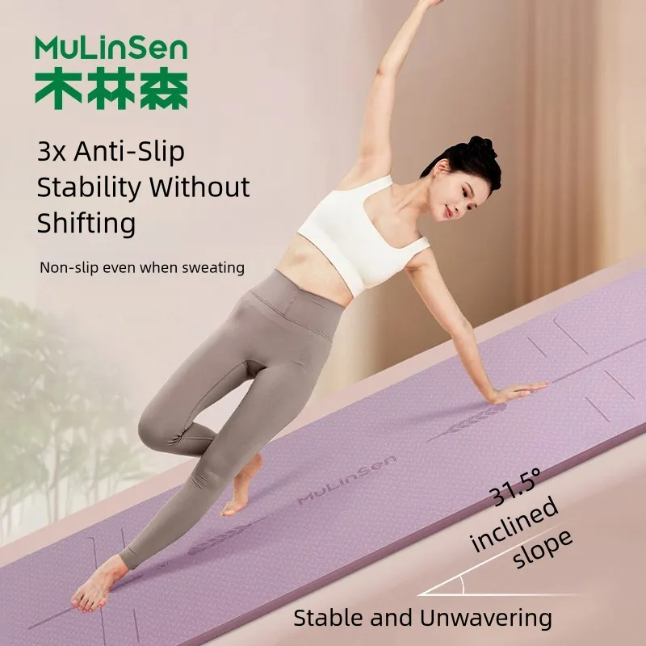
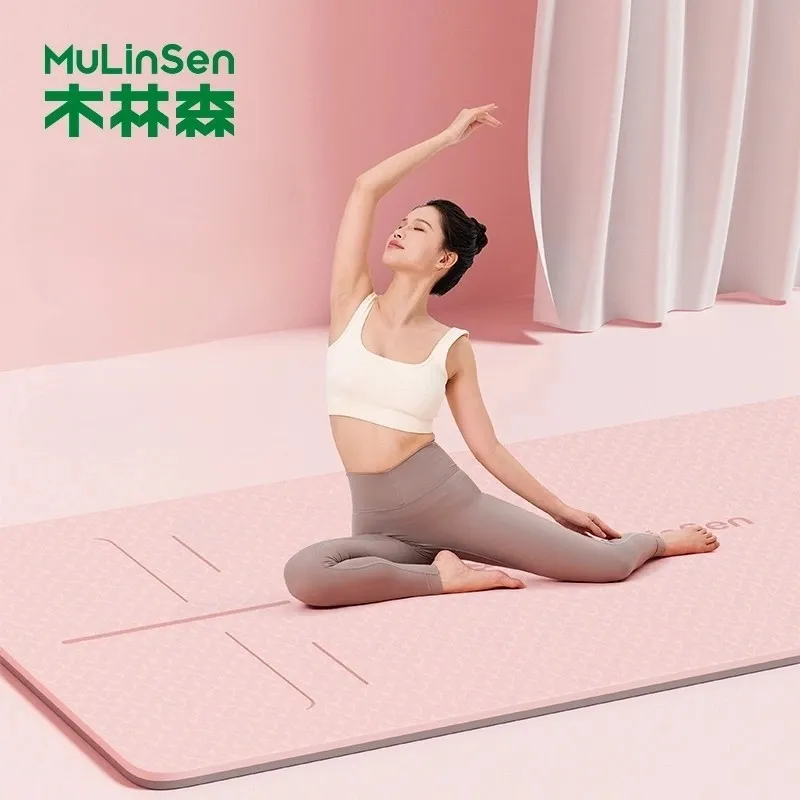
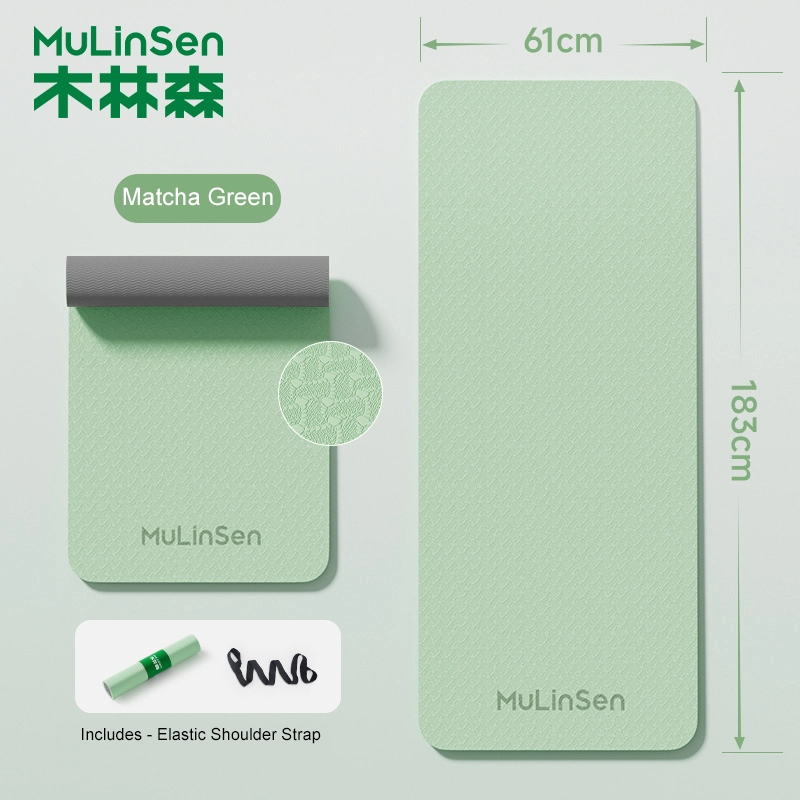
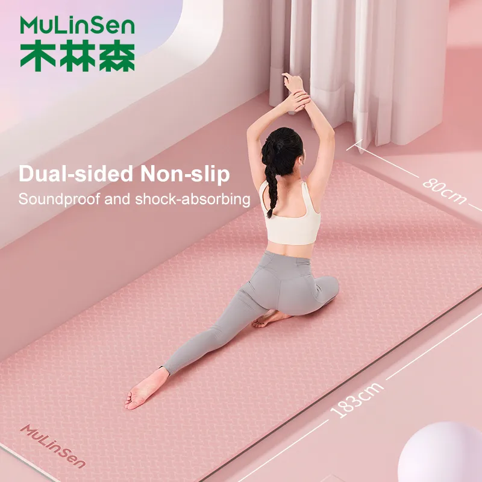
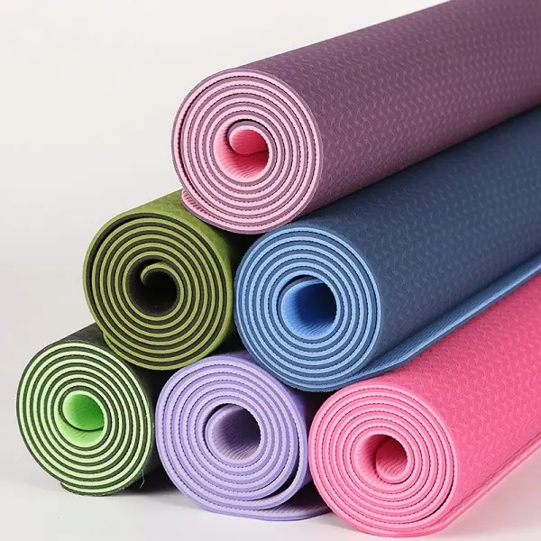
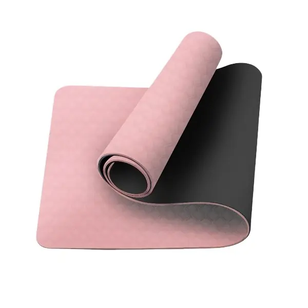
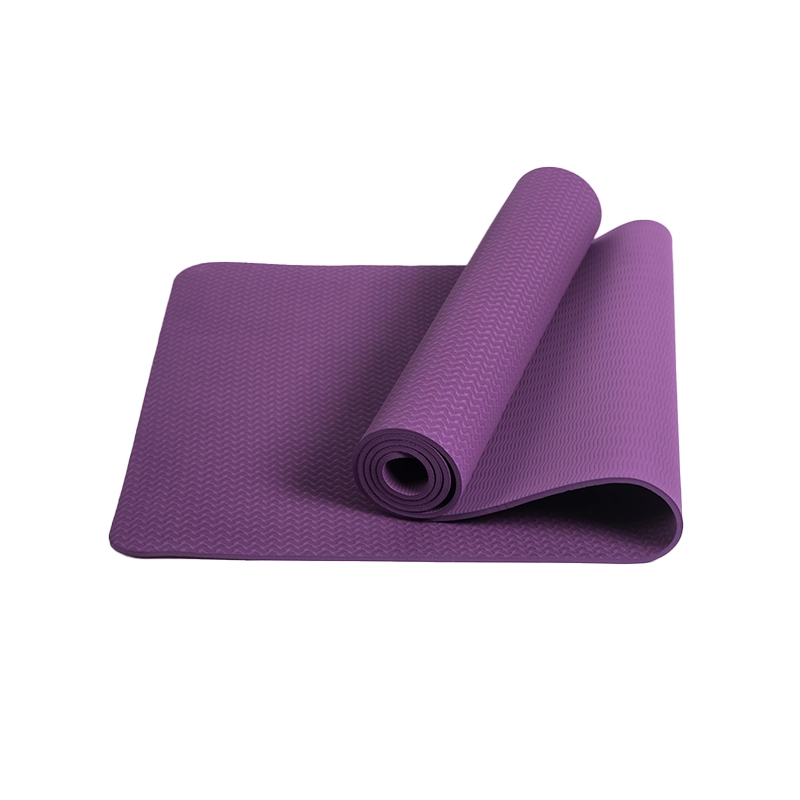
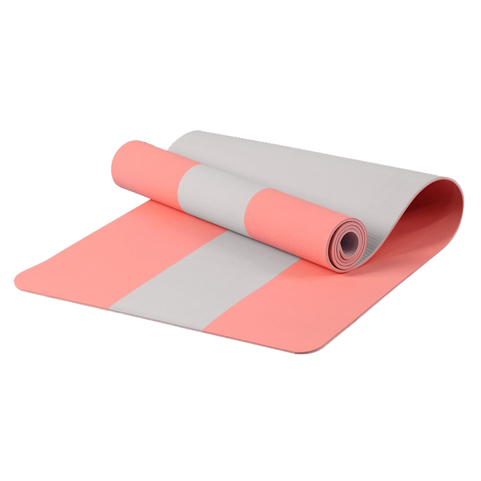
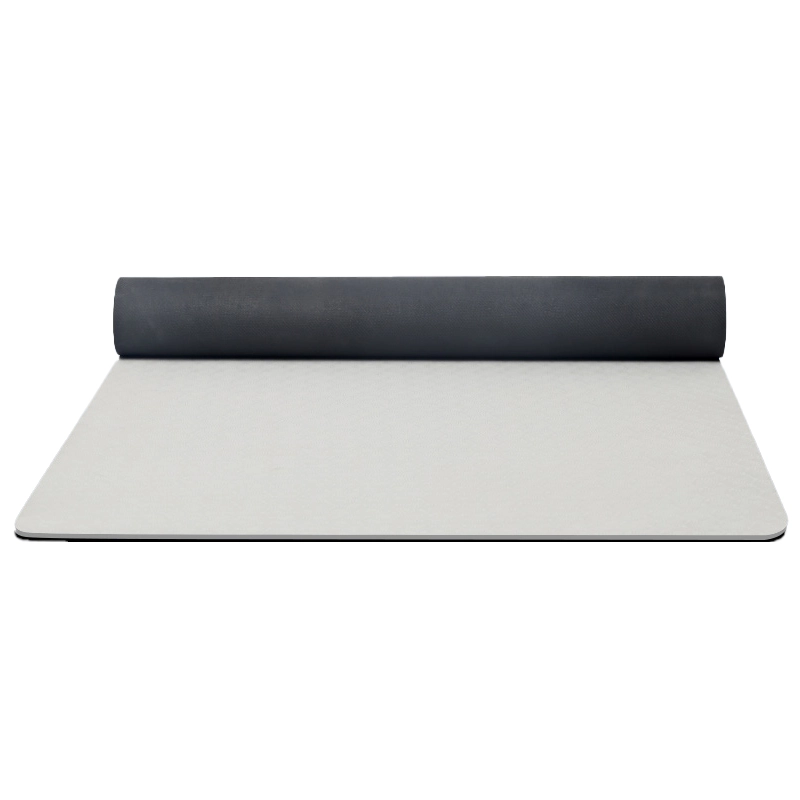

폐쇄형 셀 구조의 폴리우레탄(TPE) 폼 — 모든 요가 매트 제품군의 핵심 소재입니다. 가볍고 재활용이 가능하며 냄새가 없으며, 61~90 cm의 폭과 4–12 mm의 두께로 단일층 또는 이중층 구조로 제공됩니다. 색상, 크기, 엠보싱 로고, 인쇄된 운반용 스트랩, 소매용 포장 등 모든 사항을 OEM 방식으로 맞춤 제작할 수 있습니다.

Eco TPE(단층/이중층), 미끄럼 방지 질감 표면, 폭 61/66/80/90 cm(24"/26"/31.5"/35.5"), 두께 6–12 mm(1/4"–1/2"). 솔리드, 이코노미 및 특수 등급.

역동적인 연습과 파트너 연습을 위한 초광폭 80/90 cm TPE 매트; 동일한 친환경 이중층 그립 처리.

커플과 가족이 함께 사용하기에 적합한 와이드 사이즈 TPE 매트; 미끄럼 방지 기능이 있으며 청소가 간편합니다.

3단 접이식 디자인으로 펼치면 말리지 않고 평평하게 펼쳐지며, 6 mm (1/4") 두께의 쿠션이 적용되어 있습니다. 휴대성이 뛰어나 배낭에 간편하게 수납할 수 있습니다.

대담한 디자인의 위장무늬 TPE 매트로, 브랜드 라인에 이상적입니다.

TPE · 183cm*61cm*6 / 8mm / 183cm*80cm*6 / 8mm / 또는 맞춤 설정 가능

Cork+TPE · 183cm*66cm*6mm

TPE · 183x61cm, 183x80cm

TPE · 183x66cm, 183x80cm

TPE · 183*61cm, 30*37*7cm (접었을 때 크기)

TPE · 183x61cm

TPE · 183×90×0.6 / 0.8cm

TPE · 183×80×0.6 / 0.8 / 1 /1.2cm

TPE · 183×61 / 80 / 90cm

TPE · 183×80×0.6 / 0.8 / 1 /1.2cm

TPE · 183×90×0.6 / 0.8cm

TPE · 183cm*61cm*6 / 8mm / 183cm*80cm*6 / 8mm / 또는 맞춤 설정 가능

TPE · 183cm*61cm*6 / 8mm / 183cm*80cm*6 / 8mm / 또는 맞춤 설정 가능

TPE · 183*61cm

TPE · 183x61cm

TPE · 183x66cm, 183x61cm

TPE+고무 · 183x68cm

TPE · 185x122cm
이 업계에서 두 이름은 같은 매트를 가리킵니다. 바이어, 스튜디오, 수입업체는 “EVA 요가 매트”를 요청하지만, 실제로 필요한 것은 저희가 TPE로 생산하는 독립 기포 발포 매트입니다. 같은 제품을 어느 이름으로든 견적 드립니다. 따라서 문의가 EVA로 들어와도 TPE 매트로 견적하고 샘플을 제작합니다. MOQ 100개부터, 샘플은 약 7일, 인쇄·색상·포장 옵션도 동일합니다.
EVA 자체는 주문의 액세서리 절반에 사용합니다. 고밀도 요가 블록과 조금 더 부드러운 폼롤러이며, 매트와 같은 색 계열로 맞춥니다. 사양서에 EVA로 적혀 있고 TPE 기술 자료도 필요하시면 말씀해 주세요. 두 가지 모두 보내드립니다.
구매 담당자가 가장 많이 묻는 질문을 자체 생산라인 기준으로 정리했습니다:
도면, 희망 가격 또는 사진을 보내 주시면 24시간 이내에 견적서와 샘플 제공 계획을 회신해 드립니다. 최소 주문 수량(MOQ)은 100개부터입니다.
견적 받기